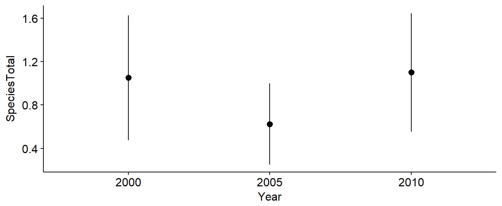
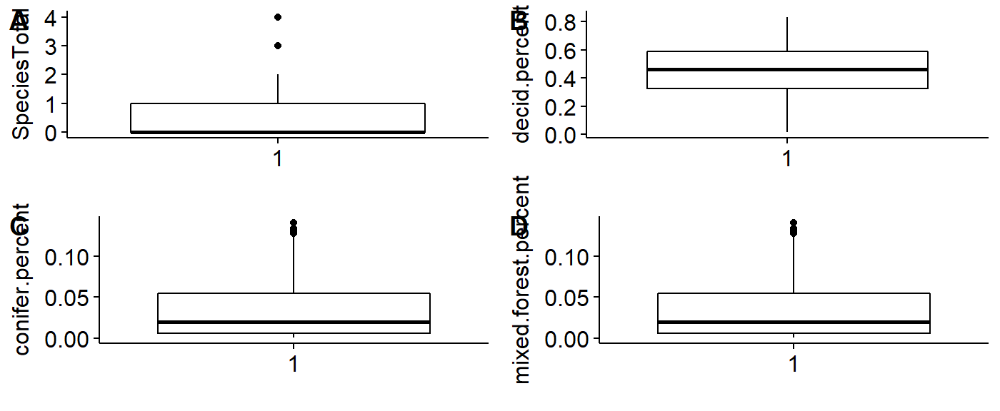
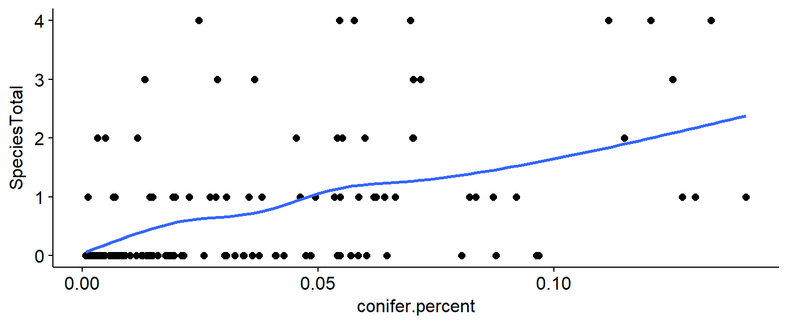

Introduction
The wildlifeR package contains data and code for analyzing a number of datasets related to wildlife ecology, animal conservation, and evolution. The focal dataset is currently the USGS Breeding Bird Survey Data for the entire state of Pennsylvania. Other datasets include data from the USGS woodcock survey, Pika distribution data from citsci.org, avian life history data, and the nutritional composition dozens of species of mammals. wildlifeR is being developed to allow students freedom to explore interesting, real-world datasets and generate their own focal questions.
Using the wildlifeR package
The first step to using wildlifeR is to select a dataset. Currently the USGS BBS data is the most developed; what follows is a step by step exploration the BBS data and the kinds of questions that can easily be explored using the data, pre-programmed R functions in wildlifeR, and tutorials (“vignettes”) included in the package.
Installing widlifeR
wildlifeR can be downloaded from the website github.com using the following code using the devtools package. Note that devtools must be installed from the website cran.corm before widlifeR can installed. Also, wildlife relies on the ggplot2, ggpubr, and dplyr packages which all must be downloaded for it to work.
The current version of wildlifeR can be downloaded like this:
#load devtools
library(devtools)
#download wildlifeR from github
install_github("brouwern/wildlifeR")
#load wildlifeR into your current R sessions
library(wildlifeR)The USGS BBS data
The focal dataset in wildlifeR is all USGS BBS data from PA from the 1960s to the present The data are loaded using data(BBS_PA). Additional information about the data, such as what is contained in each column, can be obtained from help via: ?BBS_PA.
data(BBS_PA)BBS_PA is a massive dataset of almost 1/4 millions rows.
dim(BBS_PA)## [1] 244185 8Selecting a focal bird species
A good place to start with the widlifeR package is to select a focal bird species to study. This is done by first identifying the alphabetic and/or numeric code used by the American Ornithological Union (AOU) to identify the bird.
For BBS data songbird species will work best; raptors, ducks, waterfowl etc not so much because they are much more rarely observed. There is sufficient data in the surveys on some game birds such as mourning doves, but not others such as woodcocks.
An excellent website for basic information on birds is the Cornell Lab of Ornithology’s https://www.allaboutbirds.org/.
Once you have identified a species you are interested in you need to determine the four-letter code used by the AOU. Often this is the first letter or two of each word in the name. eg, the Louisiana waterthrush is LOWA, the Robin is AMRO for “American Robin”“, the Cardinal is NOCA for”Northern Cardinal.“”
You can get complete lists of species codes from the Institute for Bird Populations website at https://www.birdpop.org/pages/birdSpeciesCodes.php . The links on the right sidebar open PDFs with all of the codes.
As an example we’ll look at the Pileated woodpecker. Its alphabetic code is “PIWO”.
Determing the numeric species code
In their database the USGS uses AOU numeric codes, not alphabetic codes. We can look up numeric codes using the dataset AOU_species_codes included in wildlifeR.
First, load the AOU code data
data(AOU_species_codes)Then make sure the dplyr package is loaded
library(dplyr)We can see the entry for PIWO and its numeric code in the “spp.num” code using the dplyr function filter()
AOU_species_codes %>% filter(alpha.code == "PIWO")## spp.num alpha.code name spp order
## 1 4050 PIWO Pileated Woodpecker Dryocopus pileatus 599A more detailed walk through of this process can be found in the vignette “Data Cleaning: Filtering focal rows with dplyr”. This vignette can most easily be accessed at the wildlifeR website https://brouwern.github.io/wildlifeR/ .
The filter() code above tells us that the the numeric code is 4050. We can use this number to extract just the Pileated woodpecker (PIWO) data from the BBS_PA dataset. We’ll save this data to an object called “BBA_PA_PIWO”. (Note that the species code is not the same row number of the dataframe).
BBS_PA_PIWO <- BBS_PA %>% filter(Aou == "4050")Selecting a focal analysis question
While numerous questions can be addressed using BBS data, the supporting datasets, code and vignettes are currently designed to allow students to investigate two questions:
- How does the abundance of a focal bird species in Pennsylvania vary with the type of habitat in the landscape.
- How has the abundance of a bird species in PA changed over time.
TO make these analyses manageable they are formatted in very different ways. For analyses using habitat variables, data from all BBS routes are merged with land-cover data from a GIS. For analyses investigating changes in abundance, that data are reformatted to isolate independent samples from each year of interest.
Formatting data for habitat analyses
Subsetting bird data
The habitat data used wildlifeR was collected in 2006. We will therefore use the filter() command again to isolate just that year of data. (Note that “Year” has a capital “Y” while the rest is lowercase).
BBS_PA_PIWO_2 <- BBS_PA_PIWO %>% filter(Year == 2006)There are about 90 BBS routes in Pennsylvania. The subset of data we have generate will have only those where the PIWo was observed in 2006. If PIWO was not seen on a route in 2006, it it not included in the dataset. Stated another way, if a bird was not seen on a route in a given year, there is no data for that route. Therefore, there are no observations of zero in the dataset. These data are therefore not appropriate for analysis as-is. This zeros, however, will get interested below.
Preparing habitat data
The habitat data are found in the dataframe BBS_PA_landcover_1km. For each BBS route the number of pixels of different habitat was determined using a GIS. These data are from the National Land Cover Dataset (NCLD) and each column is a different type of cover.
data(BBS_PA_landcover_1km)For cover classes are numbers 41 (deciduous), 42 (evergreen) and 43 (mixed). The select() function in dplyr can be used to isolate these focal columns. We’ll isolate just them and the Route number in a new dataframe called BBS_PA_landcover_1km_2.
BBS_PA_landcover_1km_2 <- BBS_PA_landcover_1km %>%
select(Route, NLCD.41, NLCD.42, NLCD.43, SUM)Calculating percentages of habitat
The raw habitat data are actual counts of the number of pixels classified as a given habitat by a GIS. The number of pixels varies a little bit between routes, so to make everything comparable we need to calculate the percentage of each forest cover. This can be done by dividing each habitat class by the SUM column
BBS_PA_landcover_1km_2$decid.percent <- BBS_PA_landcover_1km_2$NLCD.41/BBS_PA_landcover_1km_2$SUM
BBS_PA_landcover_1km_2$conifer.percent <- BBS_PA_landcover_1km_2$NLCD.42/BBS_PA_landcover_1km_2$SUM
BBS_PA_landcover_1km_2$mixed.forest.percent <- BBS_PA_landcover_1km_2$NLCD.42/BBS_PA_landcover_1km_2$SUMMerging bird counts and habitat cover
Now we need to line up the data on the number of PIWO observed on each route in our BBA_PA_PIWO_2 dataframe with the habitat data in BBS_PA_landcover_1km_2. This can be done using the full_join() function in dplyr. This joins the two dataframes together.
BBS_PA_PIWO_3 <- full_join(BBS_PA_PIWO_2 ,
BBS_PA_landcover_1km_2,
by = "Route")The habitat data in BBS_PA_landcover_1km_2 contains data from each route in PA, but PIWO wasn’t seen on every route. To line things up dplyr has inserted NA value where data were missing from BBA_PA_PIWO_2. We can get rid of these NAs like this
First, make all the “years” equal to 2006, all the Aou codes equal to 6080, and assign an alphabetic species code for each reference
BBS_PA_PIWO_3$Year <- 2006
BBS_PA_PIWO_3$Aou <- 6080
BBS_PA_PIWO_3$name <- "PIWO"There are NA values in the “StopTotal” column, which has our counts of the number of birds. We want these to be zero. We can fix this, using the function NA_to_zero()
BBS_PA_PIWO_4 <- NA_to_zero(dat = BBS_PA_PIWO_3,
column = "SpeciesTotal")If you compare the dataset BBS_PA_SCTA_3 to BBS_PA_SCTA_4 that was made with set_NA_SpeciesTotal_to_zero() you can see that the NAs were removed
#with NAs
summary(BBS_PA_PIWO_3$SpeciesTotal)## Min. 1st Qu. Median Mean 3rd Qu. Max. NA's
## 1.000 1.000 1.000 1.827 2.250 4.000 85#with NAs removed by set_NA_SpeciesTotal_to_zero()
summary(BBS_PA_PIWO_4$SpeciesTotal)## Min. 1st Qu. Median Mean 3rd Qu. Max.
## 0.0000 0.0000 0.0000 0.6934 1.0000 4.0000The data are now read for analysis. To save the data for future use use the write.csv() command.
write.csv(BBS_PA_PIWO_4, file = "PIWO_vs_forest_cover.csv")Formatting data for analysis of change over time
There are numerous ways to analyze change over time. However, the most typical ways require fairly advanced stats. This is because when something is monitored repeatedly over time it violates assumptions about random sampling that are central to standard statistical methods.
In order to allow this type of analysis to be done with fairly simple stats, the wildlifeR has a function sample_BBS_routes() which randomly allocates each available BBS route to a different year. Each route is only used once and therefore each datapoint is independent of all the others. (Though this does not solve the issue that BBS routes are themselves not randomly selected from the landscape).
To begin, select several years over which to investigate change in bird abundance. Recent years such as 2000, 2005 and 2010 work well.
Note that sample_BBS_routes() requires the package Hmisc to work.
library(Hmisc)
PIWO_00_05_10 <- sample_BBS_routes(dat = BBS_PA_PIWO,
years = c(2000,2005,2010),
aou.code = 4050)## 40 40 40The data can be plotted to investigate change over time.
library(ggplot2)
library(ggpubr)
ggerrorplot(data = PIWO_00_05_10,
y = "SpeciesTotal",
x = "Year",
desc_stat = "mean_ci")
The data can be saved using write.csv()
write.csv(PIWO_00_05_10, file = "PIWO_00_05_10.csv")Data Exploration
- Once a dataset has been created for a focal species and question the data needs to be explored.
- Plotting all the data allows us to get a feel for what it actually is.
- We can also look for outliers and anything odd.
Exploring abundance-habitat data
Boxplots, histograms, and scatterplots can be used to explore the data
Boxplots
We can make boxplots using the ggboxplot() funciton and lay themout in a grid using the plot_grid() function from the cowplot package.
First, make boxplots for each of our variables in our dataframe: abundance, and the three landcover variables.
## number of birds seen
plot.spp.total <- ggboxplot(data = BBS_PA_PIWO_4,
y = "SpeciesTotal",
xlab = "")
## Deciduous landcover
plot.decid.percent <- ggboxplot(data = BBS_PA_PIWO_4,
y = "decid.percent",
xlab = "")
## Coniferous landcover
plot.confir.percent <- ggboxplot(data = BBS_PA_PIWO_4,
y = "conifer.percent",
xlab = "")
## Mixed forest landcover
plot.mixed.percent <- ggboxplot(data = BBS_PA_PIWO_4,
y = "mixed.forest.percent",
xlab = "")Layout the four plots in a grid.
library(cowplot)
plot_grid(plot.spp.total,
plot.decid.percent,
plot.confir.percent,
plot.mixed.percent,
labels = c("A", "B",
"C","D"))
Histograms
First, make histograms for each of our variables in our dataframe: abundance, and the three landcover variables. Histograms will be save for each variable (we’ll re-use the names from above).
## number of birds seen
plot.spp.total <- gghistogram(data = BBS_PA_PIWO_4,
x = "SpeciesTotal",
xlab = "")## Warning: Using `bins = 30` by default. Pick better value with the argument
## `bins`.## Deciduous landcover
plot.decid.percent <- gghistogram(data = BBS_PA_PIWO_4,
x = "decid.percent",
xlab = "")## Warning: Using `bins = 30` by default. Pick better value with the argument
## `bins`.## Coniferous landcover
plot.confir.percent <- gghistogram(data = BBS_PA_PIWO_4,
x = "conifer.percent",
xlab = "")## Warning: Using `bins = 30` by default. Pick better value with the argument
## `bins`.## Mixed forest landcover
plot.mixed.percent <- gghistogram(data = BBS_PA_PIWO_4,
x = "mixed.forest.percent",
xlab = "")## Warning: Using `bins = 30` by default. Pick better value with the argument
## `bins`.Layout the four plots in a grid.
library(cowplot)
plot_grid(plot.spp.total,
plot.decid.percent,
plot.confir.percent,
plot.mixed.percent,
labels = c("A", "B",
"C","D"))Scatter plot
This data represents the relationship between the habitat variable (x axis) and the number of birds observed (y-axis). A “smoother” can be added to visualize the approximate relationship between the variables. As above, we can make multiple plots, save them to objects, and use plot_grid() to visualiz them all on the same plot.
library(ggplot2)
library(ggpubr)
ggscatter(data = BBS_PA_PIWO_4,
y = "SpeciesTotal",
x = "conifer.percent") +
geom_smooth(se = FALSE)

Data modeling
Modeling habitat
m.null <- lm(SpeciesTotal ~ 1, BBS_PA_PIWO_4)
m.decid <- lm(SpeciesTotal ~ decid.percent, BBS_PA_PIWO_4)
m.mixed <- lm(SpeciesTotal ~ mixed.forest.percent, BBS_PA_PIWO_4)library(broom)
tidy(m.null)## term estimate std.error statistic p.value
## 1 (Intercept) 0.6934307 0.09527369 7.278302 2.444334e-11tidy(m.decid)## term estimate std.error statistic p.value
## 1 (Intercept) -0.02992588 0.2404257 -0.1244703 0.901128022
## 2 decid.percent 1.58373706 0.4862621 3.2569619 0.001424234tidy(m.mixed)## term estimate std.error statistic p.value
## 1 (Intercept) 0.1468455 0.1165419 1.260024 2.098346e-01
## 2 mixed.forest.percent 16.1218293 2.4154827 6.674372 5.888172e-10anova(m.null, m.decid)## Analysis of Variance Table
##
## Model 1: SpeciesTotal ~ 1
## Model 2: SpeciesTotal ~ decid.percent
## Res.Df RSS Df Sum of Sq F Pr(>F)
## 1 136 169.12
## 2 135 156.80 1 12.321 10.608 0.001424 **
## ---
## Signif. codes: 0 '***' 0.001 '**' 0.01 '*' 0.05 '.' 0.1 ' ' 1